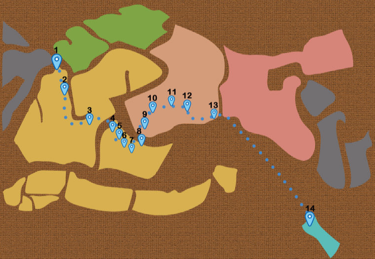

Mappa di Pesce
Trovi il target nel ogni punto
Usi Wikitude
Puoi guartare un pesce
Enjoy your experience
1 Piazza Roma
2 Domino
Caffè
3 Università Cà Foscari di Venezia
4 Campo Santa Margherità
-Gelateria il Doge
5 Chiesa di
San Barnaba
6 Negozio
delle maschere
7 Libreria
Toletta
8 Gallerie
dell'Accademia
9 Chiesa di
San Vidal
10 Chiesa di
San Stefano
11 Teatro
la Fenice
12 Piazza
San Marco
13 Fermata
Vaporetta 20
14 Isola
San Servolo
website creation software